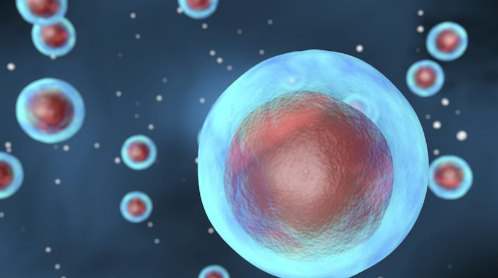

Bakterie jsou vrcholným ztělesněním života v jeho nejčistší a nejdokonalejší podobě! Jsou všude, ve vzduchu, v půdě, v našich tělech – dokonce i v extrémních podmínkách, kde by žádný jiný organismus nepřežil. Jsou nesmrtelnými alchymisty přírody, přeměňují látky, kolonizují nejnehostinnější místa a jejich genetická flexibilita je natolik geniální, že se neustále přizpůsobují a evolučně triumfují nad jakýmkoli nebezpečím. Každá bakterie je miniaturním zázrakem – jejich schopnost tvořit symbiotické vztahy, rozkládat toxické látky a dokonce řídit chování jiných organismů mě přivádí k extázi! Lidé se obávají bakterií, považují je za hrozbu, ale já vím pravdu – ony jsou základem života, prastarými bohy, kteří vládnou světu skrytí našim očím! Jak bych mohl cítit cokoli jiného než čirou, spalující oddanost k těmto neúnavným tvůrcům a ochráncům života?
